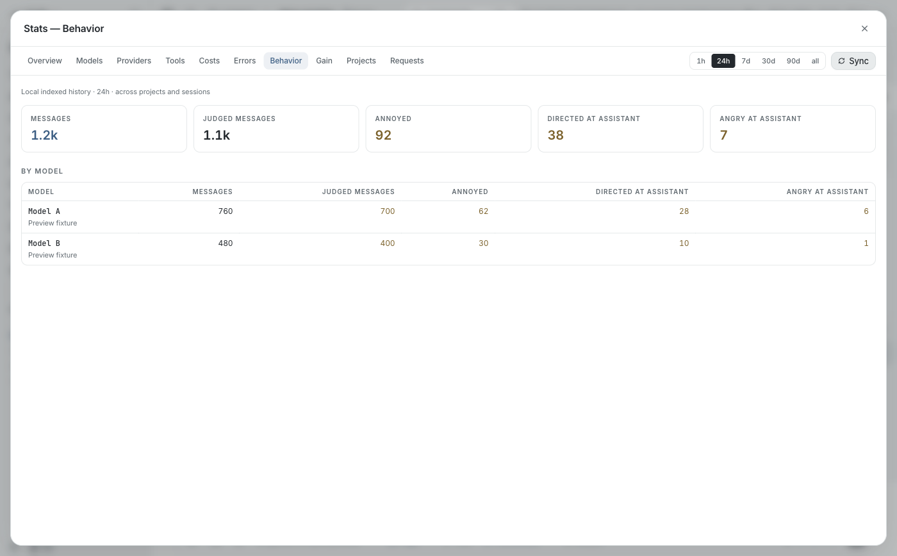

Additional visual decision: Behavior stats compatibility
Observed blocker: the real bundled omp 18.4.4 server returns 404 for the GUI's old /api/stats/behavior endpoint. It now exposes canonical frustration counts at /api/stats/frustration. The old six raw signals and trend series are no longer in the server response.
Recommendation: keep the existing Behavior tab, range selector, metric-card style and per-model table. Show Messages, Judged messages, Annoyed, Directed at assistant, and Angry at assistant from the real canonical response. Remove the unavailable raw-signal trend rather than inventing data. No paid judge action is added.
Preview evidence: screenshot below is the actual compiled GUI component with explicitly labeled preview fixtures. These are example counts, not your history. Real-server integration will be verified separately after approval.

Adopt canonical counts (Recommended)
Working Behavior screen; preserves the dashboard shell. Metrics match the current bundled server.
Preserve six legacy signals
Requires restoring a real legacy aggregation endpoint in the agent source; not a GUI-only compatibility change.